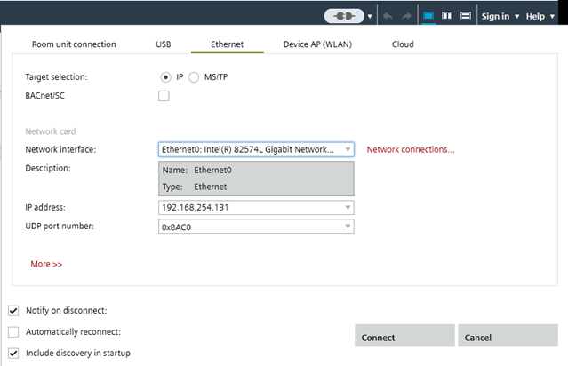
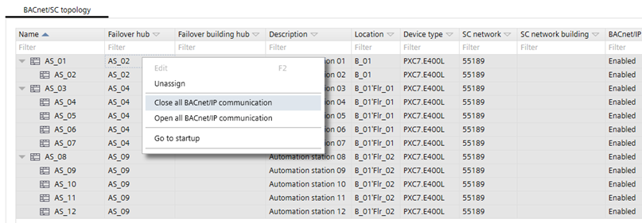
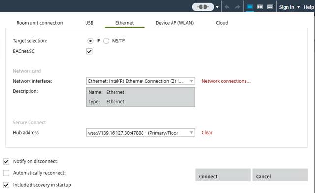

3. 设置 BACnet/SC 的设备

在转换为 BACnet/SC 之前，每个设备必须首先设置 IP 通信。无法直接配置 BACnet/SC。
1. Establish network connection
- In the Common toolbar, select the arrow next to the Connect
 icon.
icon. - Select the Ethernet tab.
- Select the Target selection option IP.

- Click Connect.
- The IP communication is established and operational.
2. Upload of the device data
为确保更改后的参数不会丢失，必须先进行上传。
Note：如果直接调试BACnet/SC，则可以跳过此步骤。
- A network connection is established
 .
.
- Go to Startup.
- Open the Configure and download task.
- In the Engineered devices area, select the device.
- Right-click the device and select Upload.
- The current device data are uploaded and stored in the project data.
上传设备数据和清除设备过程之间所做的任何参数更改都将丢失。
3. Assign the device a second time for BACnet/SC communication
- A network connection is established .
- Go to Startup.
- Open the Configure and download task.
- In the Engineered devices area, select the device.
- Right-click the device and select Find matching device type.
- The devices are listed in the Discovered devices tab.
- Select the device and click Assign.
- The device type is assigned to the device.
4. Download data to the device
- A network connection is established .
- Go to Startup.
- Open the Configure and download task.
- In the Engineered devices area, select the device.
- Right-click the device and select Load > Full (device may restart).
Note:
- Each hub and failover hub must be loaded individually. Multi-selection is not allowed.
- Multi-selection for nodes is supported.
- The current device data is downloaded.
- The device is BACnet/SC configured and operational.
共享 BACnet 对象（例如，外部气温）可能无法工作，直到引用的设备升级到 BACnet/SC 配置。
5. Disable the BACnet/IP communication
必须对所有设备禁用 BACnet/IP 通信，以确保通过 BACnet/SC. 进行安全通信

- In the BACnet/SC topology tab, select the devices.
- Right-click and select Close all BACnet/IP communication.
- Right-click the device and select Load > Full (device may restart).
Note:
- Each hub and failover hub must be loaded individually. Multi-selection is not allowed.
- Multi-selection for nodes is supported.
- The current device data is downloaded.
- The BACnet/IP communication is disabled for all devices connected to the hub.
- The BACnet/SC communication is operational and save.
6. Disconnect the network and reconnect as BACnet/SC connection
- In the Common toolbar, select the arrow next to the Connect icon.
- The IP communication is interrupted.
- In the Common toolbar, select the arrow next to the Connect icon.
- Select the Ethernet tab.
- Select the Target selection option IP.
- Select the BACnet/SC check box.
- In the Hub address drop-down list, select the hub or failover hub.

- Click Connect.
- The BACnet/SC communication is established.
- The communication icon changed to
 .
.